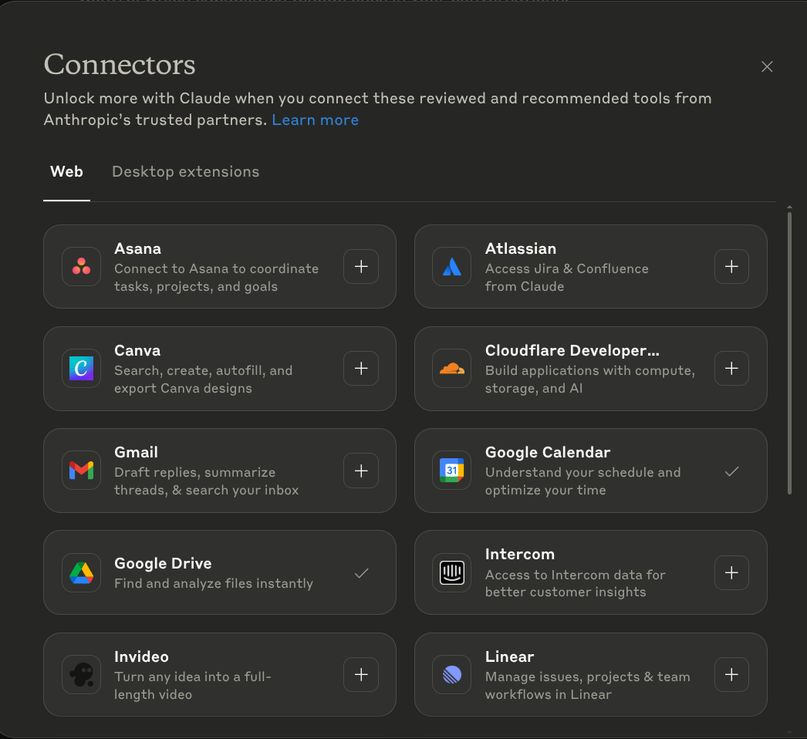
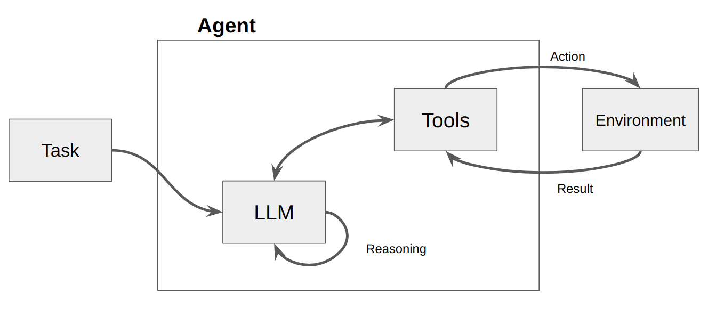
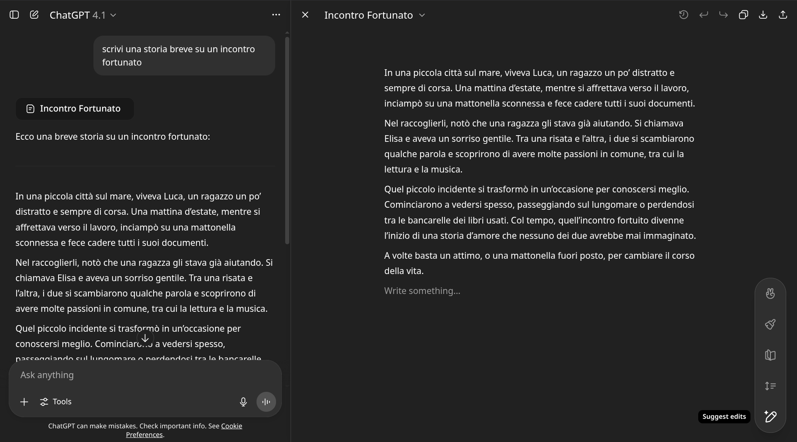
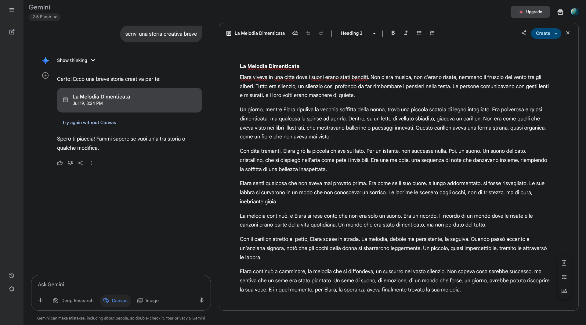
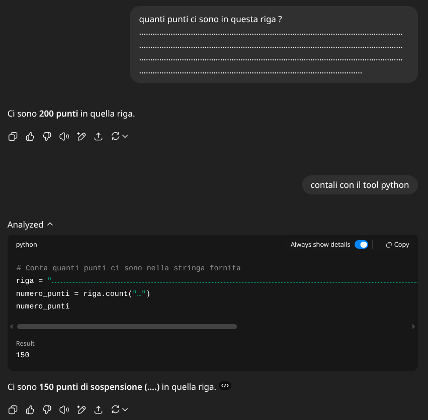
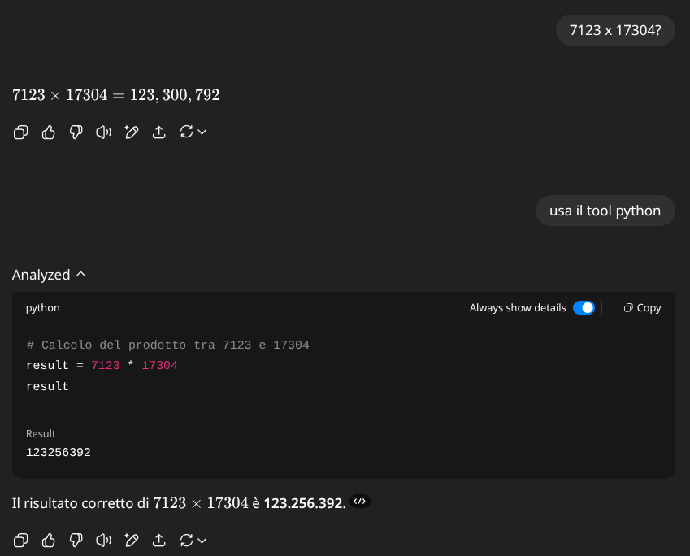
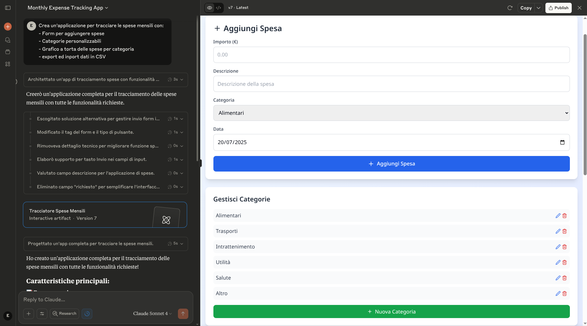

Tool per LLM
Corso LLM - Modulo 8
L’Evoluzione da Chatbot a Collaboratori
Ricordate i primi giorni di ChatGPT? Era novembre 2022, e molti erano affascinati da questo chatbot che poteva conversare su qualsiasi argomento. Ma c’era un problema fondamentale: era solo una finestra di chat. Scrivevi, copiavi la risposta, la incollavi dove serviva. Ripetevi il processo. Ancora. E ancora.
Oggi quella finestra di chat si è trasformata in qualcosa di profondamente diverso. L’evoluzione è stata graduale ma inesorabile: la capacità di cercare online è arrivata dopo mesi di sviluppo, poi sono arrivati i plugin sperimentali, la generazione immagini, le azioni dei GPTs, gli artefatti ed i canvas, ora tramite i server MCP i modelli possono essere collegati a moltissimo software. Ogni aggiornamento ha aggiunto un tassello, trasformando progressivamente un chatbot in quello che oggi potremmo definire un collaboratore digitale.
Gli LLM non sono più solo chatbot - sono diventati orchestratori di capacità che possono vedere, creare, analizzare e interagire con il mondo digitale quasi come farebbe un collega umano. Questa trasformazione non è solo tecnologica; è un cambio di paradigma nel modo in cui lavoriamo.
Per capire questa evoluzione, dobbiamo partire da un concetto fondamentale: i tool. Ma cosa sono esattamente i tool nel contesto degli LLM? E perché stanno rivoluzionando il modo in cui lavoriamo?

Il Concetto di Tool negli LLM
Cosa Sono Davvero i Tool
Immaginate di avere un assistente brillante ma chiuso in una stanza senza finestre. Può ragionare, scrivere, creare, ma non può vedere cosa succede fuori, non può usare un computer, non può nemmeno sapere che ore sono. Questo erano gli LLM fino a poco tempo fa: intelligenze capaci ma isolate dal mondo.
I tool sono le “finestre” e gli “strumenti” che diamo a questi assistenti. Tecnicamente, sono funzioni che il modello può decidere di chiamare quando necessario. Ma c’è un aspetto cruciale da capire per chi non è tecnico: quando un LLM “chiama” un tool, in realtà sta solo scrivendo. L’LLM può solo generare testo - è tutto quello che sa fare.
Pensateci come a un essere umano che deve fare una ricerca online. Voi potete cercare su Google? Sì, ma vi serve lo strumento giusto: un browser, una tastiera per inserire la query, uno schermo per vedere i risultati. Il browser deve essere progettato per interfacciarsi con voi - con le vostre mani, i vostri occhi. Allo stesso modo, i tool devono essere progettati per interfacciarsi con l’LLM attraverso l’unico mezzo che conosce: il testo.
Come Funziona il Meccanismo
Il processo è affascinante nella sua eleganza:
Il modello riceve una richiesta: “Che tempo fa a Milano?”
Riconosce la necessità di un tool: Il modello capisce che serve informazione real-time che non possiede
Genera una “chiamata di funzione”: Invece di rispondere direttamente, scrive qualcosa come:
{"function": "weather", "parameters": {"city": "Milano"}}La piattaforma interpreta: Questo testo speciale non viene mostrato all’utente. La piattaforma lo riconosce come un’istruzione
Il sistema esegue: La piattaforma chiama davvero l’API meteo
Il risultato torna al modello: “Milano: 22°C, sereno”
Il modello genera la risposta finale: “A Milano ci sono 22 gradi con cielo sereno. Una bella giornata!”
Questo meccanismo di “function calling” ha aperto possibilità prima impossibili. Questa capacità di generare output strutturato che trasforma un chatbot in un sistema capace di agire.
L’Impatto Rivoluzionario
La differenza può sembrare sottile, ma è profonda. Prima, gli LLM potevano solo parlare del mondo. Ora possono interagire con esso. Prima potevano solo descrivere come inviare un’email. Ora possono davvero inviarla.
Un esempio che chiarisce tutto: chiedete a un LLM senza tool “Quanti file ci sono nella mia cartella Documenti?” Non può rispondere - non ha accesso al vostro computer. Ma con il tool giusto, può:
- Generare la chiamata per accedere al filesystem
- Ricevere la lista dei file
- Contarli e rispondere con precisione
È come dare vista a chi era cieco, mani a chi non poteva toccare. E questo è solo l’inizio.

Artefatti e Canvas: Una Rivoluzione nell’Interfaccia
Il Problema che Nessuno Vedeva
C’è un momento che tutti abbiamo vissuto. L’AI genera una risposta perfetta - una email professionale, un report dettagliato, del codice pulito. E poi inizia il calvario: “Certamente! Ecco la tua email professionale:” seguito dal contenuto che volevi. Copi tutto. Togli la parte introduttiva. Formatti. Sistemi.
Piccola modifica? Ricopi tutto nel prompt, aspetti la rigenerazione completa, ricopi, riformatti. Un’altra modifica? Ripeti. È un workflow che definire frustrante è un eufemismo.
Questo processo era così comune che non ci facevamo più caso. Era “come funzionano i chatbot”. Poi, nell’estate 2024, tutto è cambiato.
Claude Artifacts
Il 21 giugno 2024, Anthropic annunciò Claude 3.5 Sonnet insieme a una nuova feature chiamata Artifacts. Non era solo una funzionalità - era una filosofia completamente nuova.
L’insight fondamentale era semplice: conversazione e contenuto sono cose diverse. La chat è per discutere, iterare, esplorare. Il contenuto - il documento, il codice, il diagramma - merita il suo spazio dedicato.
Tecnicamente, quando Claude genera un Artifact:
- Riconosce che il contenuto è sostanziale (oltre 20 righe o 1500 caratteri)
- Lo marca con tag speciali nel suo output
- La piattaforma lo intercetta e lo renderizza in un pannello separato
- Mantiene versioning e stato attraverso l’intera conversazione
La vera magia è nell’esperienza utente.
I Tipi di Artifacts: Oltre il Testo
Claude supporta diversi tipi di Artifacts, ognuno con capacità uniche:
Documenti (Markdown): Non semplice testo, ma documenti strutturati con formattazione ricca. Perfetti per report, proposte, documentazione. L’export è pulito e professionale.
SVG e Diagrammi: Grafici vettoriali editabili. Ideali per infografiche, schemi, visualizzazioni che devono essere precise e scalabili.
Mermaid Diagrams: Flowchart, sequence diagram, gantt chart generati da descrizioni testuali. Si aggiornano dinamicamente mentre iterate sul design.
Il momento “wow” arriva quando realizzi la potenza. “Crea un diagramma di flusso per il nostro processo di onboarding clienti” diventa un diagramma professionale in 30 secondi. “Aggiorna per includere il nuovo step di verifica” e il diagramma si riorganizza automaticamente.
ChatGPT Canvas: L’Evoluzione del Concetto
OpenAI lanciò Canvas nell’ottobre 2024, osservando attentamente cosa ha fatto Anthropic e spingendo il concetto in una direzione diversa: collaborazione diretta invece di generazione e visualizzazione.
Le differenze sono sostanziali:
Editing In-Place: In Canvas puoi cliccare e modificare direttamente. Non è più un modello che genera e tu che osservi - è vera collaborazione. Vedi il cursore dell’AI che fa modifiche mentre tu lavori. La sensazione è quella di Google Docs, ma con un collaboratore che capisce le tue intenzioni al volo.

La filosofia è chiara: Artifacts separa conversazione e contenuto. Canvas li fonde in un’esperienza collaborativa unificata.
Il Confronto che Conta
Non è una gara. Sono approcci diversi per esigenze diverse:
- Usa Artifacts quando vuoi generare contenuto pulito e iterare mantenendo la conversazione separata
- Usa Canvas quando vuoi lavorare gomito a gomito con l’AI sul documento stesso
Entrambi risolvono il problema fondamentale: eliminare il tedioso copia-incolla. Entrambi trasformano l’AI da generatore di testo a vero collaboratore creativo.

Vale la pena notare che anche Gemini ha recentemente aggiunto i canvas, in uno stile simile a quello di ChatGPT dove sia l’utente che l’AI possono modificare direttamente i documenti.
Tool di Codice: Quando l’AI Programma
Gli LLM sono straordinariamente bravi a programmare. Come conoscono molte lingue naturali, conoscono anche moltissimi linguaggi di programmazione. Python e i linguaggi web come HTML, CSS e JavaScript sono i loro punti di forza, essendo abbondantemente presenti nei dati di addestramento.
Ma fino a poco fa, il codice generato era come un’email: andava copiato e usato da un programmatore. L’evoluzione rivoluzionaria è che ora l’LLM può non solo scrivere il codice, ma anche eseguirlo direttamente tramite un tool.
Code Interpreter: Il Veterano
La capacità di eseguire codice è stata una delle aggiunte più rivoluzionarie agli LLM. Ma il percorso è stato tutt’altro che lineare.
Code Interpreter (il veterano di ChatGPT) gira in container isolati sui server di OpenAI. Python completo, librerie scientifiche pre-installate, può processare dati. Ma c’è un limite cruciale: zero accesso a internet per ragioni di sicurezza. È potente ma isolato.
Questo strumento risolve già elegantemente il problema che abbiamo visto nel Modulo 2 del contare i punti. L’LLM non sa quanti punti ci sono perché vede token che ne contengono molti assieme, ma sa scrivere esattamente gli stessi token in un interprete di codice per calcolare il vero risultato.
Se volete provare, ecco gli stessi 150 punti del Modulo 2:
…………………………………………………………………………………………………….

Anche le operazioni matematiche, che abbiamo visto essere un forte limite dopo una certa difficoltà, possono essere risolte brillantemente con il tool Code Interpreter. Calcoli complessi, analisi statistiche, manipolazione di dataset - tutto diventa possibile.

Canvas con Pyodide e la Vera Rivoluzione
Canvas con Pyodide rappresenta un approccio diverso in pratica: Python che gira nel vostro browser, non su server remoti.
Ma la vera rivoluzione sono proprio gli Artifacts di codice:
HTML/CSS/JavaScript: Scrivi, visualizzi, itera. In tempo reale. “Crea una landing page per il nostro nuovo prodotto” diventa una pagina funzionante in 60 secondi.
React Components: Qui la magia raggiunge l’apice. Applicazioni interattive complete, con stato, eventi, tutto funzionante. “Crea un dashboard per monitorare le vendite con grafici interattivi” e in 60 secondi hai:
- Grafici che si aggiornano
- Filtri funzionanti
- Responsive design
- Codice pulito e commentato
Un Esempio di interfaccia interattiva
Volete vedere la potenza? Ecco un test reale:
“Crea un’applicazione per tracciare le spese mensili con:
- Form per aggiungere spese
- Categorie personalizzabili
- Grafico a torta delle spese per categoria
- Export ed import dati in CSV”
Risultato in 45 secondi:
- Applicazione React completa
- 200+ righe di codice pulito
- Interfaccia professionale
- Tutte le funzionalità richieste
- Pronta per essere salvata e usata

Il codice non è perfetto. Ma è un prototipo funzionante che prima avrebbe richiesto ore. È questa la rivoluzione: dalla idea al prototipo testabile in meno tempo di quanto serva per fare un caffè.
Il Futuro: MCP e Integrazioni Avanzate
Model Context Protocol: Lo Standard che Cambierà Tutto
Nel novembre 2024, Anthropic ha annunciato il Model Context Protocol (MCP)
L’analogia migliore? USB per l’LLM.
Prima di USB, ogni dispositivo aveva il suo connettore proprietario. Stampanti, scanner, tastiere - tutto richiedeva porte e driver specifici. USB ha standardizzato tutto. MCP fa lo stesso per le connessioni LLM.
Tecnicamente, MCP definisce:
- Schema standardizzato per descrivere tool e capacità
- Protocollo di comunicazione bidirezionale
- Gestione stato e sessioni persistenti
- Sicurezza e permessi granulari
Praticamente, significa che presto potrete:
- Connettere qualsiasi LLM al vostro CRM aziendale con un click
- Dare accesso selettivo e sicuro a database interni
- Implementare workflow che sopravvivono tra sessioni
- Condividere tool tra diversi modelli LLM
Come evidenziato dalla rapida adozione, major providers inclusi OpenAI e Google DeepMind hanno già abbracciato lo standard. Non è solo una specifica tecnica - è il futuro dell’interoperabilità LLM.